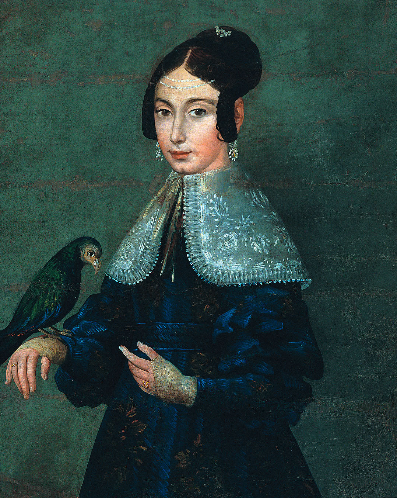

Retrato de Ángel Ganivet, José Ruiz de Almodóvar (Siglo XIX) Danza del bolero en Granada, Dutailly (1805) La plaza de Bib-Rambla, Luis Muriel (1834)
Retrato del duque de San Pedro de Galatino, Gabriel Morcillo Raya (1922) Retrato de dama con loro, Joaquín de la Rosa (1839)  Monumento a Isidoro Máiquez, F. Pérez (1838)
Sereno, Luis Muriel (1834) Ayuntamiento Viejo de Granada, Mariano Fortuny y Marsal (1873) Francisco Chacón, La Quinta Angustia (1492)
Inmaculada Concepción, Fray Juan Sánchez Cotán (1617-1618) San Juan Evangelista en la isla de Patmos, Alonso Cano (1645) El Entierro de Cristo, Jacobo Florentino, el Indaco (1521-1526)